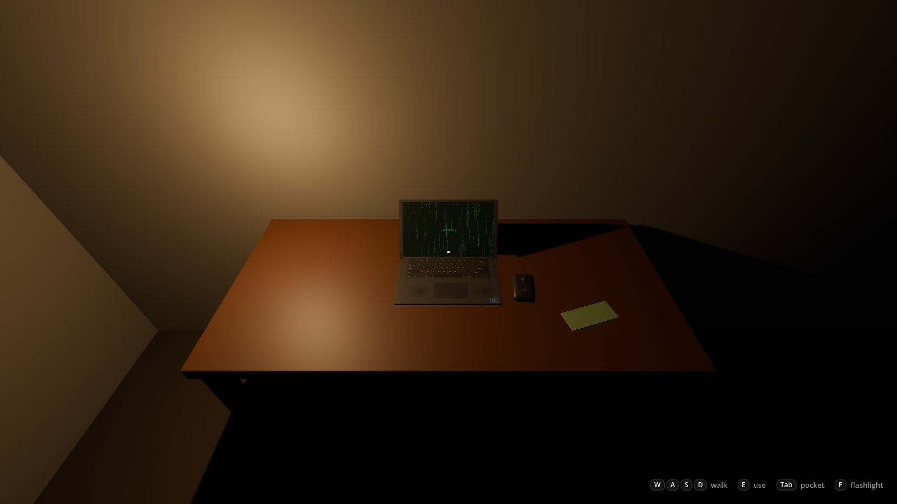
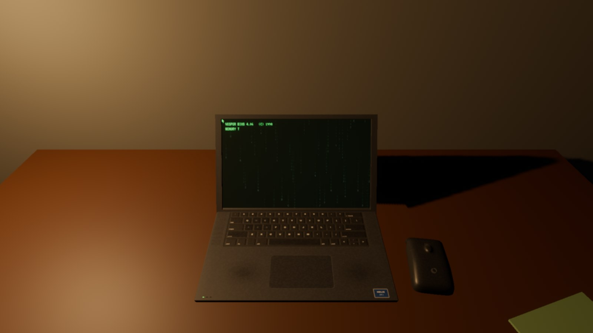
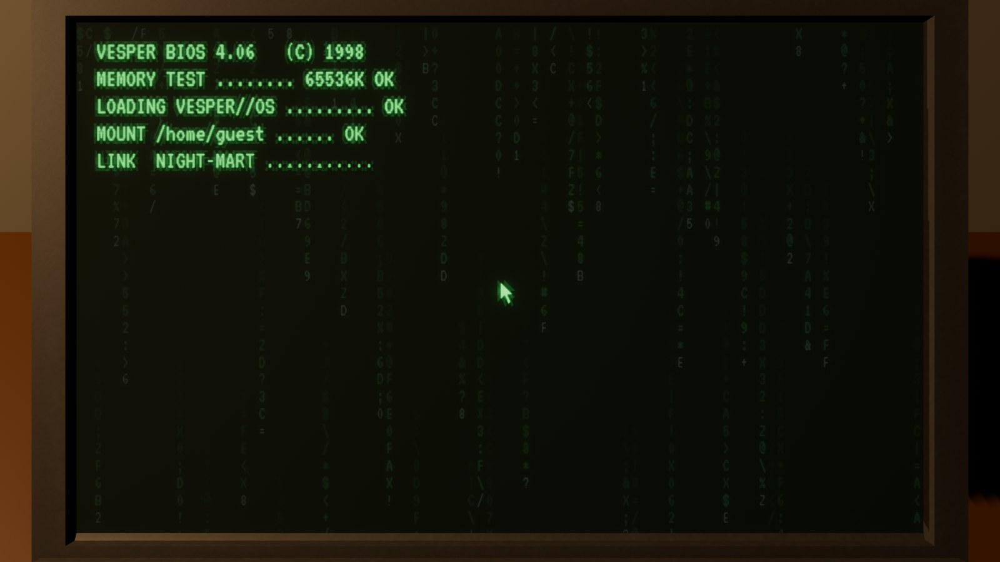
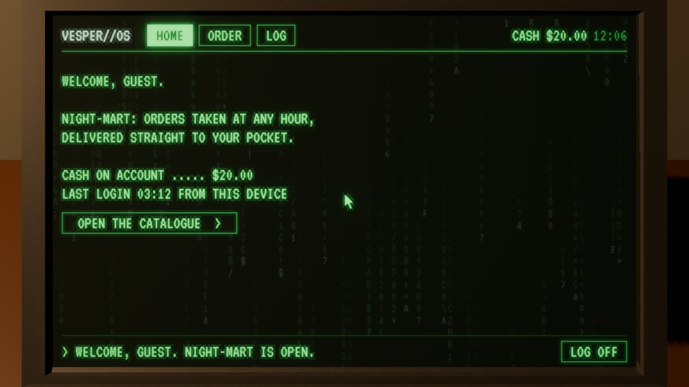
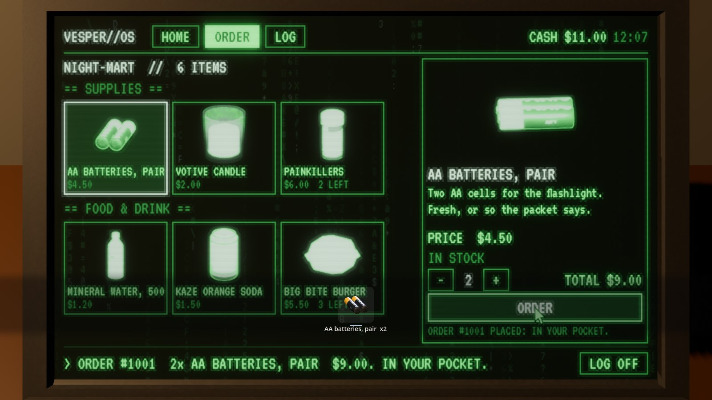
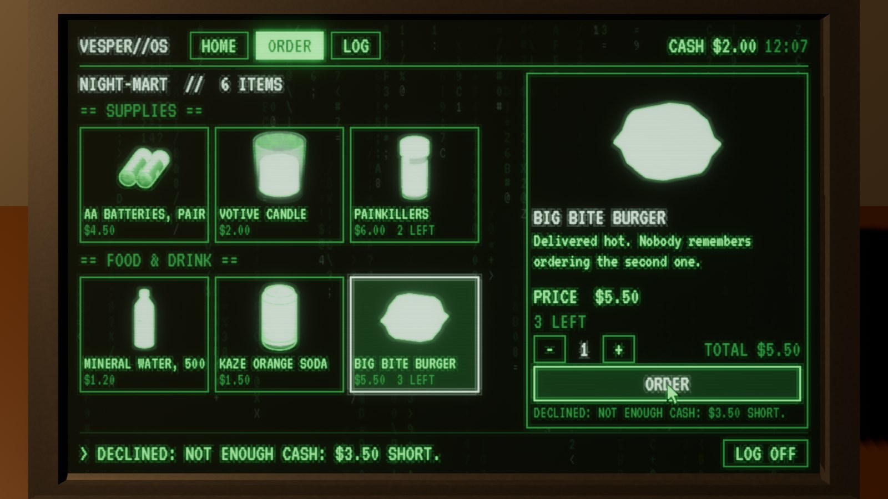
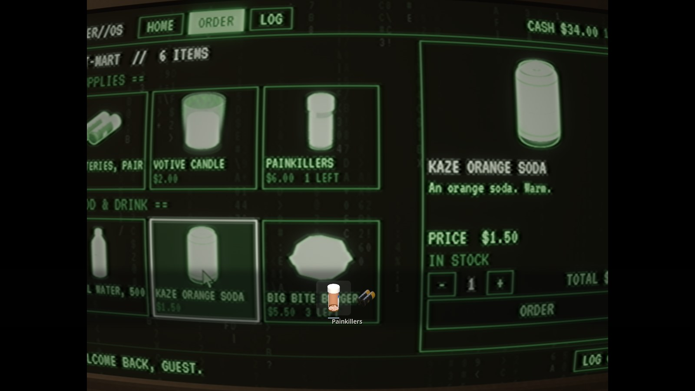
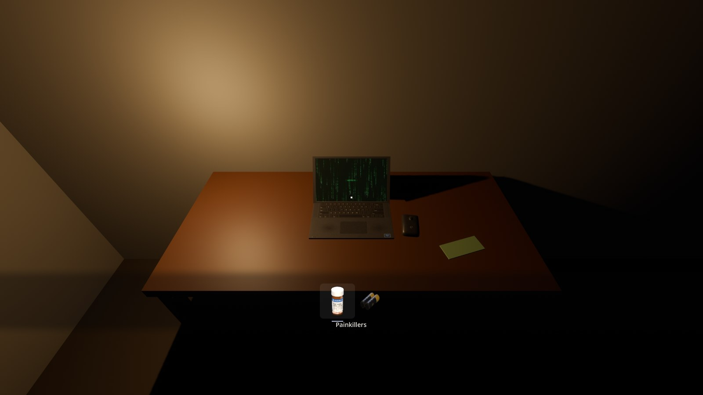
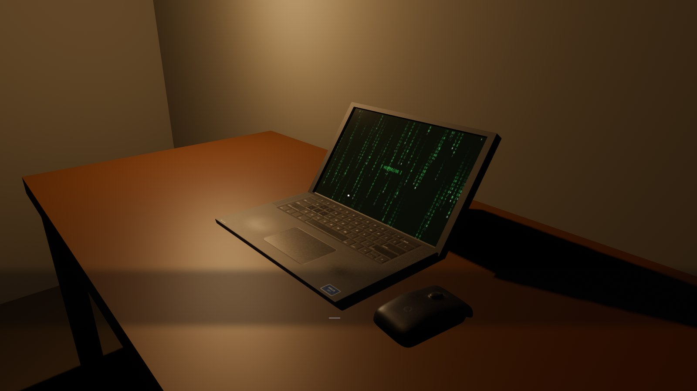
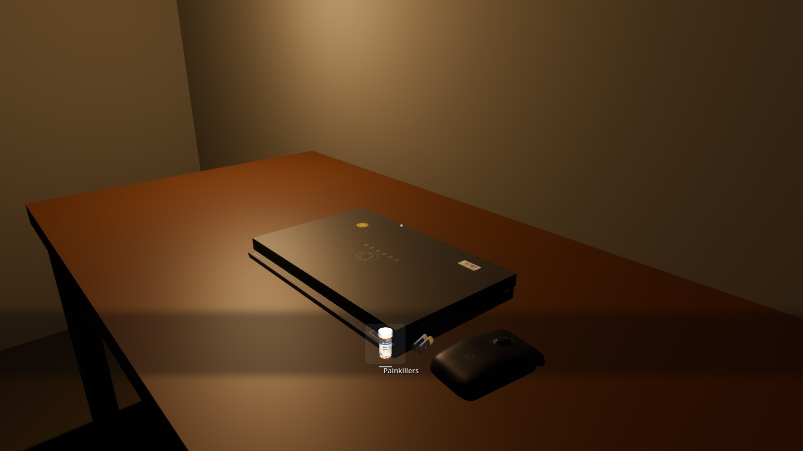

The laptop
A laptop to sit at, for a Godot game you build by hand. Press E on it and the view goes in close to its screen: a green terminal you use with the mouse. Its Order tab sells things for the player's cash, each shown as its own model, and what's bought goes into the pocket, where the HUD's inventory row shows it. Drag the prefab onto a desk; add a thing to sell by saving one small file.
1What it is
One add-on, addons/horrorstudio_devices/, and one prefab, laptop/laptop.tscn: your PSX-style
laptop and its mouse (made into real-size props by the prop generator) with HSLaptop on them.
It finds its own lid, its screen and where the screen is (the model's sockets), puts a terminal on the glass, and
does the rest. What it sells is an HSShopCatalog of HSShopItems:
six to start with (AA batteries for the flashlight, a candle, painkillers, water, a soda, a burger).

2Try it first
The plugin's own check builds a project to play: a small office at night with the laptop on a desk, a $20 note beside it, the starter's player standing at the desk with $20 in the pocket. Keep it in a folder of your own and open it:
python tools/godot/laptop_check.py --keep ~/Games/LaptopLab godot ~/Games/LaptopLab/project.godot # then F5
Click into the window to take the mouse, look at the laptop, press E. It plays itself through once
headless first (the check) and says LAPTOP ok.
3Putting it in a project
A project made by tools/godot_byhand.py has it already, enabled, beside the Look, UI and Weapons plugins
and the starter kit:
python tools/godot_byhand.py new ~/Games/MyGame python tools/godot_byhand.py install ~/Games/MyGame # a project you have: the plugins again, the starter left alone
In Project › Project Settings › Plugins it's HorrorStudio Devices. It needs the UI plugin beside it (the slots that show things' models are the HUD's own).
- Drag
addons/horrorstudio_devices/laptop/laptop.tscninto your level, onto a desk (its feet on the desk's top; it faces +Z, the way you'd sit at it). - Your player is the starter's (
res://starter/player.tscn): its E uses what it looks at, and the laptop makes its own collider so E finds it. - For cash and a pocket the scene needs the starter's Story node (story.gd: set its Cash), and for the pocket's row an HSHud (the UI plugin's).
story.gd and pickup.gd grew for this (a pocket that counts, names and shows its
things; cash). godot_byhand.py install leaves your starter/ alone: copy those two files from
guides/first_game/starter/ into an older project's starter/. The laptop still sells without them, from its own
Cash.4Sitting at it
E on it and the player stops; the view leaves the eye and goes in square to the screen in under a second, the lens narrowing to 40° so the screen is flat and fills nine tenths of the view. The mouse is the terminal's own pointer (green, drawn on the screen); it clicks what it's over. The first time, the machine boots: its lines typed out.



| E on it | sit at it (a shut laptop opens first) |
| Mouse | the terminal's pointer; Left click presses what it's over; the wheel scrolls |
| Esc, E, LOG OFF | back to the room (the view back to your eye, the screen asleep again) |
5The Order tab
Every thing for sale is a card under its heading: its own model (turning while the pointer's on it), its name, its price and, if the shop only has a few, how many are left. Click one and it's on the right, large and turning, its words typed out; − and + for how many, the total, ORDER.

Ordered, it's paid from the cash and goes straight into the pocket: the status line says the order's number, the HUD's inventory row comes up for a moment with the thing's own model in it.



A thing whose shop has only a few (its Stock) says how many are left; sold out, its card says so and ORDER can't be pressed. Each laptop counts what it has sold.
6Things to sell: adding one
A thing is one HSShopItem file. In the FileSystem dock right-click a folder, Create New › Resource…, HSShopItem, and fill it in:
| Id | its name in the pocket: what a door, a script or Story.has("…") asks for (batteries is the starter flashlight's spares) |
| Title | its name on the screen and in the pocket's row |
| About | a line or two, typed out under it |
| Price, Count | what it costs; how many one order puts in the pocket |
| Stock | how many the shop has (−1: no end) |
| Category | the heading it's listed under |
| Model | what it looks like: any scene (a made prop's .glb from Saved/Props/, your own mesh). Its card, the pocket's row and your hand all show it. |
| Model Turn | degrees: how it sits in its slot (a flat thing stood up) |
Then either put it in a catalog's Items list (the laptop's Catalog; the plugin's own is
shop/catalog.tres), or set the catalog's Folder and just save every item there: a file in the folder is
for sale, nothing to list. A laptop with no catalog sells the plugin's.
# the plugin's own six, to copy from
addons/horrorstudio_devices/shop/items/batteries.tres candle.tres painkillers.tres
water.tres soda.tres burger.tres
shop/catalog.tres into your game's folder, change its Store
name and things, and give it to the laptop's Catalog. Two laptops can sell different things.7Cash and the pocket
The cash is the starter's Story node's Cash: set what the player starts with there.
A pickup.gd with Cash (and no item) is money lying about: E on it and the cash goes up.
The pocket counts: give("batteries", "AA batteries", model, 2), count_of("batteries"),
take("batteries").
When the scene has an HSHud, the pocket is its inventory row: the things themselves, scaled into their slots, the one in your hand in the middle. Tab shows it or hides it, the wheel turns it, and it comes up for a moment when something comes in (a pickup or an order).

8The green terminal's look
Green phosphor on black, one pixel font (VT323, OFL), frames of thin lines, the things' models in the same green, the code's rain behind it all. On the glass: the screen's rows (fading where they'd be finer than a pixel), a phosphor's glow round what's lit, a faint flicker. It's an HSTerminalLook (the laptop's Look):
| Ink, Dim, Faint, Paper, Hot | its greens and its black (an amber or a white terminal: change them) |
| Font, Text Px | a pixel font of your own; its size |
| Rain, Rain Idle, Glyphs | the rain behind the windows, the rain alone when nobody's at it, what it's made of |
| Scanlines, Glow, Flicker | the glass |
| Boot | the boot's lines the first time it wakes |
| Models In Ink | off: the things' models in their own colours |
The laptop's own: System Name, User, Home Text ({user}, {store}, {cash}
filled in), Clock (a time it always shows, or the real one), Brightness, Zoom Fov, Fill,
System Pointer, Sounds.
9The laptop and the mouse
Your model, PSX STYLE Low Poly LAPTOP & MOUSE, analysed and enhanced as the retro pack's models were:
brought to its real size (330 mm wide), its edges rounded off a little, every surface painted in code (its own two
textures were photos off the web, and weren't ours to ship). Real keys with their legends, the ones a game is played
with polished; a touchpad; speaker grilles; ports; feet and vents underneath; a webcam; the screen a surface of its own.
The mouse made round, its wheel, its grip and the sensor's red glow underneath. Recipes laptop,
laptop_shut and computer_mouse (the prop generator's computer family, PROPGEN §32).


They're customizable props: in the prop generator's page, ✎ on the laptop puts your own pictures on
lid.logo, lid.sticker, lid.tag and deck.sticker (the prop customizer guide shows how).
Made again, copy Saved/Props/laptop/laptop.glb over addons/horrorstudio_devices/models/laptop.glb.
10In your own scripts
$Laptop.opened.connect(func(): print("at the laptop"))
$Laptop.closed.connect(func(): print("back in the room"))
$Laptop.ordered.connect(func(item, count, total): print(count, " ", item.title, " for ", total))
$Laptop.use($Player) # sit the player at it from a script
$Laptop.leave() # and back
$Laptop.lid_open = false # shut (E opens it again)
$Laptop.place_order(load("res://shop/lighter.tres"), 1) # an order without the screen: {ok, number, total}
# a tab of your own beside HOME, ORDER and LOG (any Control)
$Laptop.term.add_tab("MAIL", preload("res://mail_tab.tscn").instantiate())
$Laptop.term.say("1 NEW MESSAGE.") # the status line
$Laptop.term.log("A login from somewhere else.")
# the pocket and the cash (the starter's Story node)
$Story.earn(20.0) $Story.pay(4.5) $Story.cash
$Story.give("key_304", "Room 304's key", model) $Story.count_of("batteries")
11Good to know
- While you're at it nothing else hears the keys or the mouse: the player stops (its walking, looking and E), a gun under the eye can't fire, and the Story's corner words step aside. The view's camera leaves the view models' render layer out.
- The screen is drawn only while it can be seen: always while you're at it; asleep, a dozen times a second while you're within Wake M (7 m) and it's in view; otherwise not at all.
- Its picture fits any screen: it's made the screen's own shape, and it's put on the glass by the screen's own
vertices, so a remade laptop (another size, another model with a
*_screensurface and thescreensockets) works the same. - No red: a refusal is said, with a low buzz; the terminal stays one green.
- Its sounds are made in code (
tools/device_sounds.py): a blip, a tick, keys, the order's three notes, the refusal's buzz, the boot, the lid, the coil's hum. Turn them off with Sounds.